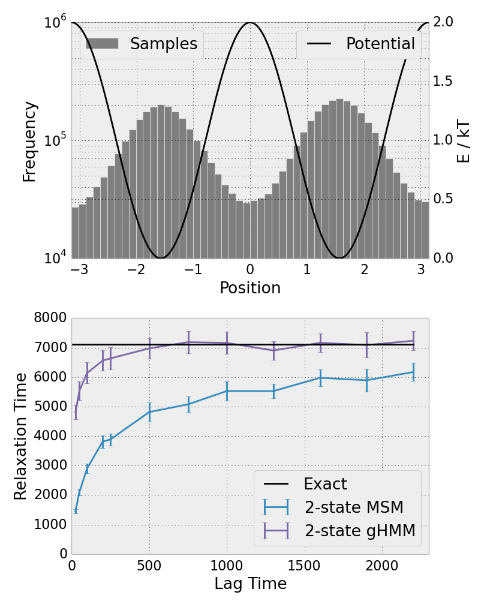

Hidden Markov Models are Better
with Applications to Ubiquitin
Robert McGibbon
Pande Group Meeting. January 13, 2014
Biology at the Atomic Length Scale
Biology at the Atomic Length Scale
 |
 |

Experiments Can't Do It Alone


Molecular Dynamics


- Calculate the atomic-level physical interactions in the system
- Numerically integrate the equations of motion
Predictive and Interpretable models from MD
Models are required to understand MD


MSMs and HMMs
How do we analyze MD?
Accuracy vs. Interpretability
Goal: Accelerate scientific insight about structure and dynamics

- General tradeoff between model accuracy and interpretability
- In machine learning, prediction accuracy is all that matters
- I don't care 'how' your deep neural net recognizes a cat
- In physics, accuracy without interpretability is the reductionist folly.
- Laplace's demon won't solve protein folding.
Markov State Models
States and Rates
- Discretize phase space into $N$ disjoint sets (how?), time into intervals $\tau$.
- Model evolution on the sets as 1st order Markov process
- Estimate $T_{ij}$ by counting observed transitions in a collection of equilibrium trajectories
Accuracy Problems with MSMs
What's holding us back?
$$ \mathcal{C}^* = \underset{\mathcal{C}} {\operatorname{argmax}}
\underbrace{\; \left[-\sum_{i=1}^{N} \sum_{\mathbf x_j \in \mathcal{C}_i} d(\mathbf x_j, \mu_i)^2\right]}_\text{clustering quality} $$
$$ \mathbf{T}^* = \underset{\mathbf{T}}{\operatorname{argmax}} \underbrace{\prod_i^{N-1} \mathbf{T}({c_{x_i} \rightarrow c_{x_{i+1}}})}_{\mathbf{T} \text{ quality, given } \mathcal{C}}$$
$$\{\mathcal{C}^*, \mathbf{T}^*\} \neq\underset{\mathcal{C}, \mathbf{T}} {\operatorname{argmax}} f(\{\mathcal{C}, \mathbf{T}\}; \mathbf{x})$$
- Our MSM construction, including the discretization, does not attempt optimize any single objective function
- Independent optimization of states and rates -- no unified framework.
Clustering is arbitrary
Interpretability Problems with MSMs
What's holding us back?

Even in a double well potential, quantitatively
resolving the eigenfunctions requires
more than two MSM states.
- Difficulty of interpretation is proportional to the number of states
- And many are needed for accurate predictions.
- Even tougher to visualize the eigenprocesses when the states are implicitly defined (e.g. RMSD)
What's an HMM?
$$ S_0 \sim \operatorname{Multinomial}(\pi) $$
$$ S_{t+1} \sim \operatorname{Multinomial}(\mathbf{T}_{s_t}) $$
$$ X_{t} \sim f(\,\cdot\,; \theta_{s_t}) $$
- States are unobserved, but an output, dependent probabilistically on the state, is visible.
- Each state is equipped with an output distribution $f(\mathbf{x}; \theta_s)$, which need not be orthogonal.
$$
f(\mathbf{x}; \theta_{s_t}) = \mathbb{P}(X_t = \mathbf{x} | S_t = s)
$$
Likelihood function
Joint distribution over a data and state sequence from $0$ to $t$
$$
\mathbb{P}(\mathbf{x}_{0:t}, s_{0:t}) = \pi_{s_0} f(\mathbf{x}_0; \theta_{s_0}) \prod_{i=1}^t \bold{T}_{s_t, s_{t+1}} \cdot f(\mathbf{x}_t; \theta_{s_t})
$$
Likelihood formally requires summing over all possible paths
$$
\mathcal{L} = \mathbb{P}(\mathbf{x}_{0:t} | \mathbf{T}, \theta) = \sum_{\{s_{0:t}\}} \mathbb{P}(\mathbf{x}_{0:t}, s_{0:t})
$$
Learning the model
$$
\mathbb{P}(\mathbf{x}_{0:t} | \mathbf{T}, \theta ) = \sum_{\{s_{0:t}\}} \left[ \pi_{s_0} f(\mathbf{x}_0; \theta_{s_0}) \prod_{i=1}^t \bold{T}_{s_t, s_{t+1}} \cdot f(\mathbf{x}_t; \theta_{s_t}) \right]
$$
$$
\{ \mathbf{T}^*, \theta^* \} = \underset{\{\mathbf{T}, \theta\}}{\operatorname{argmax}} \; \mathbb{P}(\mathbf{x}_{0:t} | \mathbf{T}, \theta )
$$
- We fit the maximum likelihood model, adjusting the transition matrix, states' means, and (co)variances.
- Maximize the probability that the model would generate the observed data, if we sampled from the HMM.
Learning the model
Baum-Welch (EM)
- E-step: computed expected hidden state sequence, given current $\mathbf{T}, \theta$.
- Distribution over the states at each time: $\mathbb{P}(S_t = i)$
- Computational complexity: $O(T \, N^2)$
- M-step: Find new $\mathbf{T}, \theta$ that maximize likelihood, with $S$ fixed as above
- Fitting gaussian to data, maximum likelihood reversible transition matrix.
Fitting the HMM with Baum-Welch
Update Equations
E-Step: Forward Algorithm
Forward algorithm recursively computes the probability of of $S_t$ given the observed signal $X$ from $t=0$ to $t$.
$$\begin{aligned}
\alpha(s_{t+1}) = \mathbb{P}(s_{t+1}, \mathbf{x}_{0:t+1}) & = \sum_{s_t} \mathbb{P} (s_{t+1}, s_t, \mathbf{x}_{0:t}, \mathbf{x}_{t+1}) \\
& = \mathbb{P}(\mathbf{x}_{t+1} | s_{t+1}) \sum_{s_t} \mathbb{P}(s_{t+1} | s_t) \mathbb{P}(s_t, \mathbf{x}_{0:t}) \\
& = f(\mathbf{x}_{t+1}; \theta_{s_{t+1}}) \sum_{s_t} \mathbf{T}_{s_t, s_{t+1}} \alpha(s_t)
\end{aligned}$$
$$
\mathcal{L}(\mathbf{x}; \{\mathbf{T}, \theta\}) = \sum_{s_t} \mathbb{P}(s_t, x_{0:t}) = \sum_{s_t} \alpha(s_t)
$$
E-Step: Backward algorithm
Observations from $t=t+1$ to $T$ also give evidence about the state $S_t$ that can be computed recursively
$$\begin{aligned}
\beta(s_{t}) = \mathbb{P}(\mathbf{x}_{t+1:T} | s_t) & = \sum_{s_{t+1}} \mathbb{P}(\mathbf{x}_{t+1:T} | s_{t+1}) \mathbb{P}(s_{t+1} | s_t) \\
& = \sum_{s_{t+1}} \mathbb{P}(\mathbf{x}_{t+1}, \mathbf{x}_{t+2:T} | s_{t+1}) \mathbb{P}(s_{t+1} | s_t) \\
& = \sum_{s_{t+1}} \mathbb{P}(\mathbf{x}_{t+1} | s_{t+1}) \mathbb{P}(\mathbf{x}_{t+2:T} | s_{t+1}) \mathbb{P}(s_{t+1} | s_t) \\
& = \sum_{s_{t+1}} f(\mathbf{x}_{t+1}; \theta_{s_{t+1}}) \, \mathbf{T}_{s_t, s_{t+1}} \, \beta(s_{t+1}) \\
\end{aligned}$$
E-Step: Final Quantities
$$\begin{aligned}
\gamma_i(t) & = \mathbb{P}(S_t=i | \mathbf{x}_{0:T}) \\
& = \frac{\alpha_i(t) \beta_i(t)}{\sum_j \alpha_j(t) \beta_j(t)} \\
\xi_{ij}(t) & = \mathbb{P}(S_t = i, S_{t+1} = j | \mathbf{x}_{0:T}) \\
& = \frac{\alpha_i(t) \mathbf{T}_{ij} \beta_j(t+1) f(\mathbf{x}_{t+1}; \theta_{s_j})}{\sum_{kl} \alpha_k(t) \mathbf{T}_{kl} \beta_l(t+1) f(\mathbf{x}_{t+1}; \theta_{s_l}) }
\end{aligned}$$
M-Step: Update Equations
$$ ^{(k+1)} \mu_i = \frac{\sum_t \gamma_i(t) \mathbf{x}_t}{\sum_t \gamma_i(t)} $$
$$ ^{(k+1)} \sigma^2_i = \frac{\sum_t \gamma_i(t) (\mathbf{x}_t-\mu_i)^2}{\sum_t \gamma_i(t)} $$
$$
^{(k+1)} \mathbf{T} = \underset{\mathbf{T}} {\operatorname{argmax}} \sum_{ij} \log (\mathbf{T}_{ij}) \sum_t \xi_{ij}(t)
$$
Tradeoffs
Losses in using the HMM over the MSM
- Evolution of $X_t$ in the HMM is not Markovian.
- $\mathbb{P}(X_t | X_{t-1}, X_{t-2}, \ldots) \neq \mathbb{P}(X_t | X_{t-1} )$
- HMM is not a direct discretization of the transfer operator.
- Connections to spectral theory / operators are weaker.
- Each conformation $X_t$ is not uniquely assigned to a single state.
- Fitting with very large numbers of states is not practical.
Tradeoffs
Gains in using the HMM over the MSM

- None of the arbitrariness of the MSM state decomposition
- The state locations and widths can be optimized
- All of the ML machinery is now available
- Cross validation
- Model selection (AIC, BIC)
- Direct macrostate models
Implementation
CPU (SSE+OpenMP), CUDA
>>> import numpy as np
>>> import mdtraj as md
>>>
>>> trajectory = md.load('trajectory.xtc', top='structure.pdb')
>>> distances = md.compute_distances(trajectory, np.loadtxt('AtomIndices.dat'))
>>>
>>> from mixtape.ghmm import GaussianFusionHMM
>>> model = GaussianFusionHMM(n_states=4, n_features=len(atom_indices), platform='cuda')
>>> model.fit([distances])
>>>
>>> print model.transmat_
[[ 0.966 0.033 0.001 0.001]
[ 0.002 0.945 0.002 0.051]
[ 0.001 0.012 0.959 0.028]
[ 0.021 0.038 0.029 0.912 ]]
Thanks Everyone!
Especially Vijay, Bharath, Christian, and Matt.